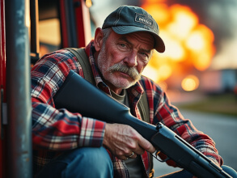

Trucker
Code Name: Toxic the Maximalist
Filename: Bucky Bronson
Specialty: Truck Driver
Birthplace: Edmonton, Alberta
Toxic grew up on a small farm in Edmonton where he learned to the value of a hard day's work from a young age. He found his calling driving a truck to deliver the goods.
Toxic hauls cargo up to Fort Mack and back to save up to buys his own rig one day.

His favorite Hockey team is the Oilers and his favorite player is, of course, the greatest of all time: Wayne Gretzky.
Toxic spends his spare time cleaning his guns after taking them out for target practice. It's not clear how many he owns as he stores them in multiple provinces.
"They call him Toxic for a reason, but the goods are always on time and dependable" -Client review